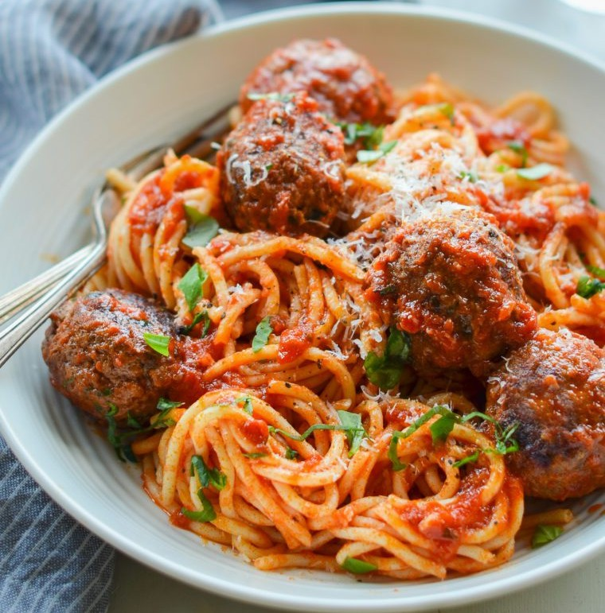

Spaghetti

Spaghetti and meatballs with tomato sauce.
Ingredients
- 1 Large Egg
- 3 Tbsp. Basil
- 3 Tbsp. Parsley
- 1 tsp. Oregano
- 3/4 tsp. Salt
- 1/4 tsp. Black Pepper
- 2 Garlic Cloves, Minced
- 1/4 Cup Water
- 1-1/2 lbs. ground meat mixture
- 3/4 Cup Dried Bread Crumbs
- 1/2 Cup Parmigiano-Reggiano
- 32 oz. Marinara Sauce
- 1 lb. Spaghetti Noodles
Steps
- In a large bowl, combine the egg, basil, parsley, oregano, salt, pepper, garlic and water; whisk well.
- Add the meat, breadcrumbs and Parmigiano Reggiano. Mix with your hands until just combined.
- Roll the mixture into golf ball-sized meatballs, and place on an ungreased baking sheet.
- Bake for about 10 minutes, then remove the baking sheet from the oven and use a metal spatula or tongs to turn the meatballs.
- Put the meatballs back in the oven and cook for another 10 minutes, until they are nicely browned and almost cooked through.
- Bring the marinara sauce to a simmer in a large skillet. Season to taste.
- Transfer the browned meatballs to the marinara sauce, leaving the fat behind.
- Cover loosely with a lid or foil and simmer for about 10 minutes, until the meatballs are cooked through. Keep warm until ready to toss with pasta.
- Bring a large pot of well-salted water to a boil.
- Add the spaghetti and cook until al dente. Drain, then toss with the sauce and meatballs.
- Transfer the spaghetti and meatballs to serving bowls and top with fresh chopped basil and more grated cheese.